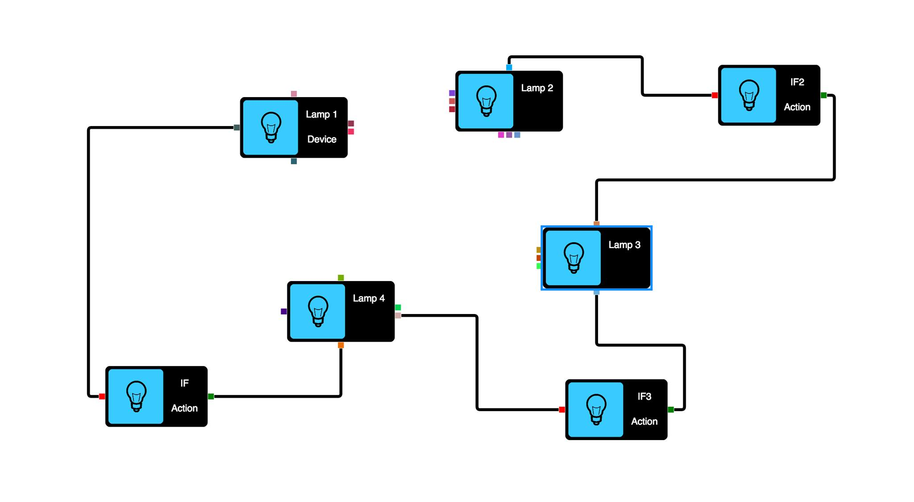

<polymer-element name="edit-page">

    <template  >
        <link rel="stylesheet" type="text/css" href="../stylesheets/style.css">
            <figure>
                
            </figure>

    </template>
    <script>
        Polymer("edit-page",{
                    ready : function(){
                        console.log("edit page ready");


                    }
                }
        )
    </script>
</polymer-element>